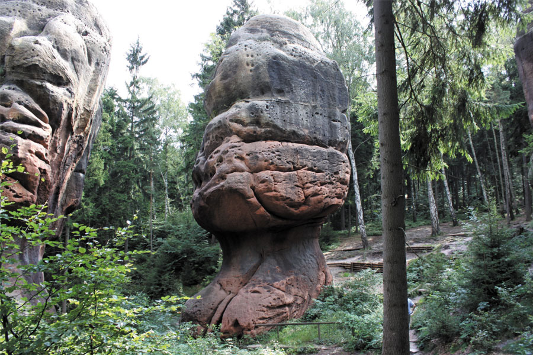
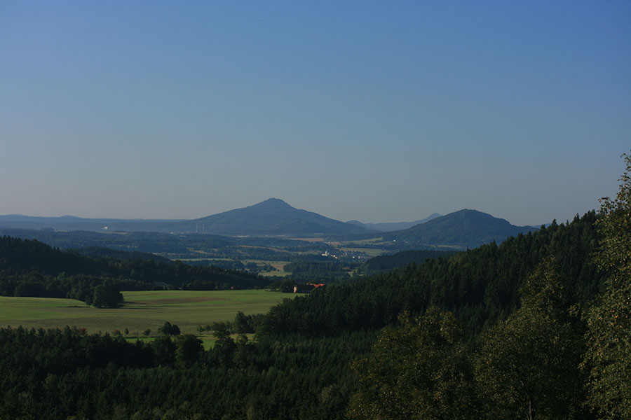
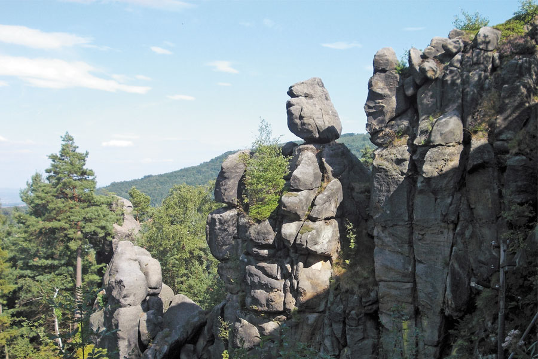

Dreiländereck
Zittauer Gebirge
Sie wohnen inmitten eines zusammenhängenden Kranzes der Berge. Im Osten der Jonsberg (652 m), im Süden der Felsklotz der Mühlsteinbrüche mit der „Orgel", im Westen der wild zerklüftete Nonnenfelsen und genau vor unserer Haustür der wuchtige Buchberg (651 m) mit der dahinterliegenden, alles überragenden Lausche (792 m).
Unzählige lauschige Wege führen zu Aussichtspunkten mit prachtvollen Fernsichten nach Sachsen, Schlesiens Bergen und ins Sudetenland.

Sommer & Winter
An heißen Tagen lockt das Gebirgsbad oder der mit dem Auto 5 Minuten entfernte Trixi-Park Großschönau zu einem erfrischenden Bad. Oder Sie genießen etwas Kultur auf der Waldbühne Jonsdorf, welche jeden Sommer neue humorvolle Stücke präsentiert.
Zünftige reiche Beschäftigungsmöglichkeiten bietet Jonsdorf auch im Winter mit gut gespurten Loipen, Lausche-Abfahrt und dem 5 Minuten entfernten Eissportzentrum. Seit 2004 bietet das Schmetterlingshaus eine neue Attraktion in Jonsdorf.

Entdecken
Bilder
